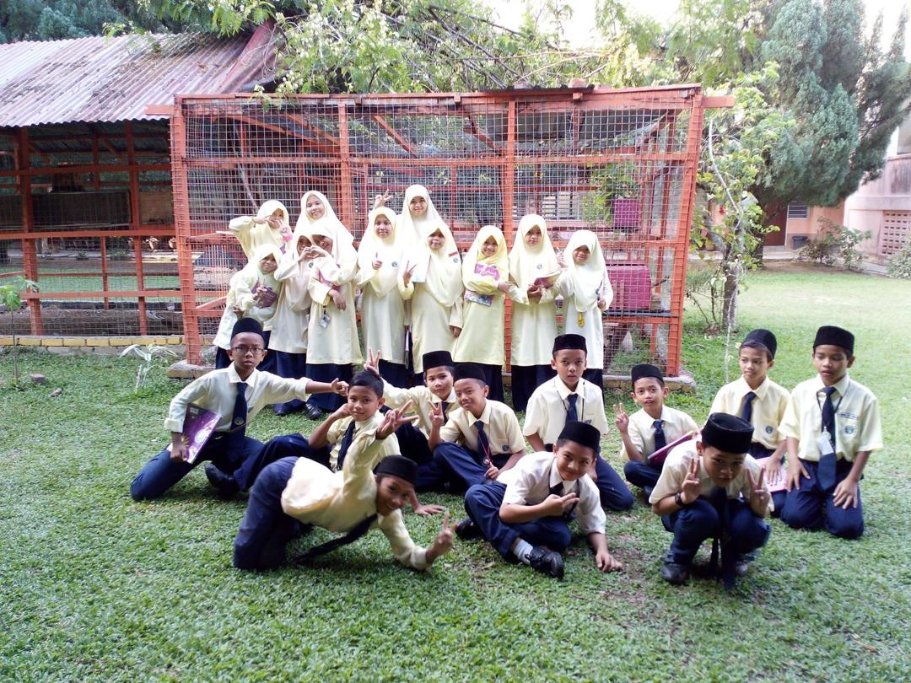

This is my primary and high school, which is SMK Seri Bentong. An interesting fact about my school is that it implements a combination of primary and high schools. For your information, my school is a school that has a dormitory, and students in the school must live in the dormitory.
I feel very proud because I was able to enter this school. The selection of students at this school is limited. For your information, I entered this school from the age of 10 to 17. Entry for primary school students in this school is known as Sekolah Indera Shahbandar Pahang (SISP). In Pahang, there are four schools that have SISP students.
While I was at this school, I gained a lot of new knowledge about life and studies. This school has also educated me as an independent and responsible person. There are many experiences that I cannot forget about this school. In my opinion, this school should be established more because it can build students into more disciplined people.